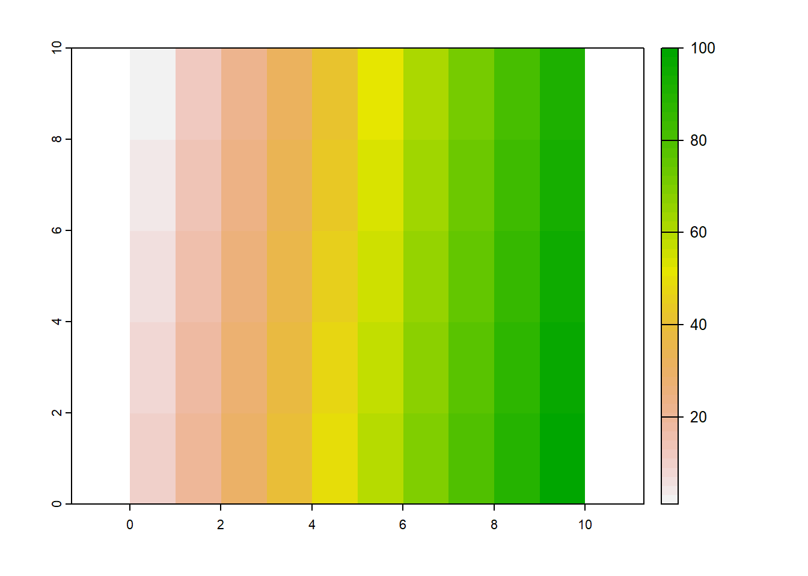
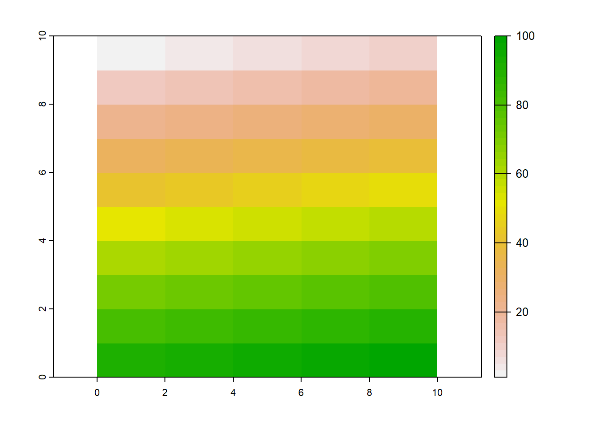
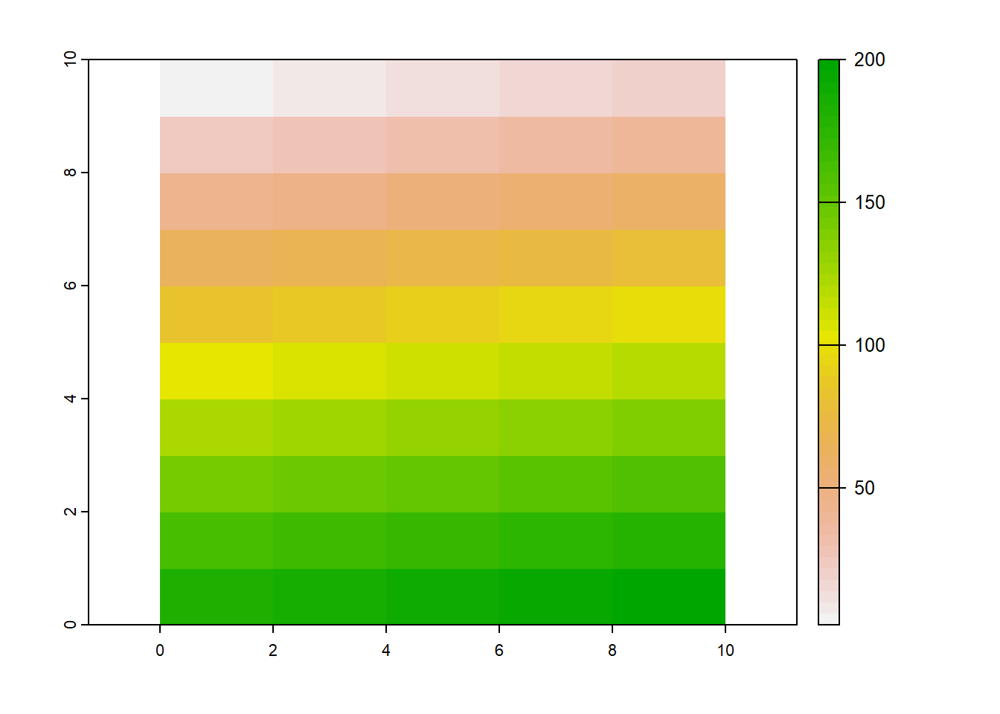
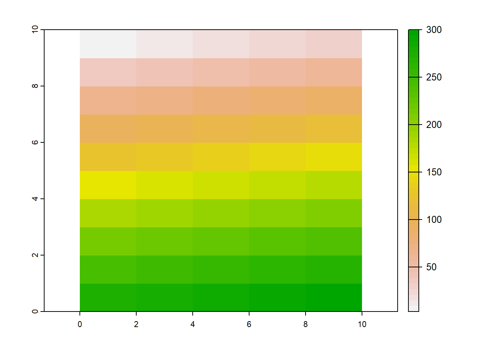
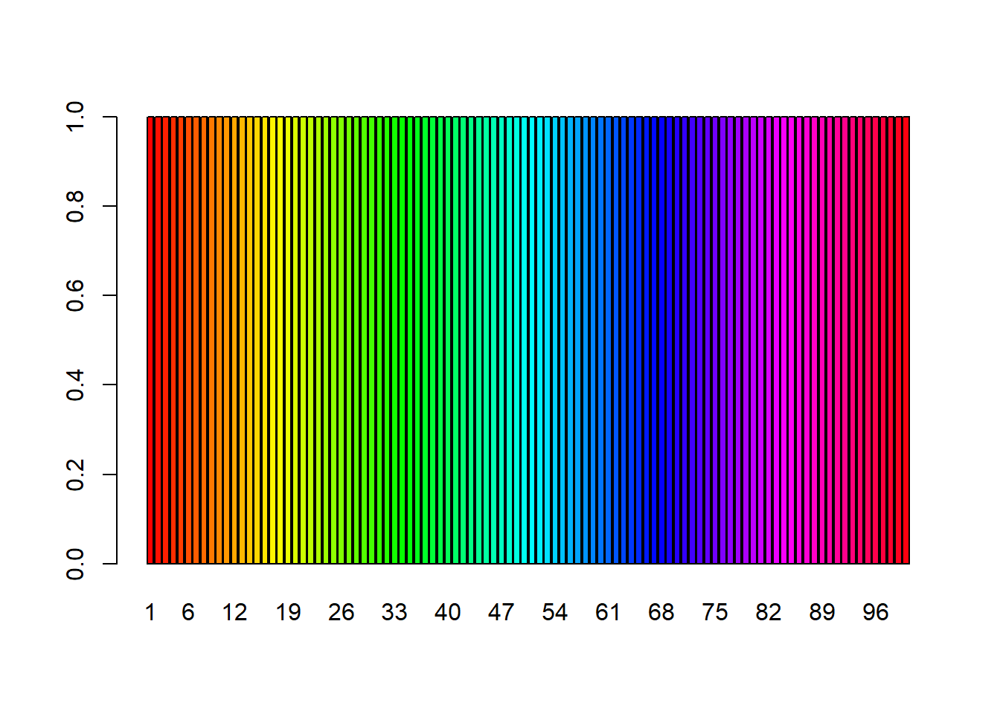
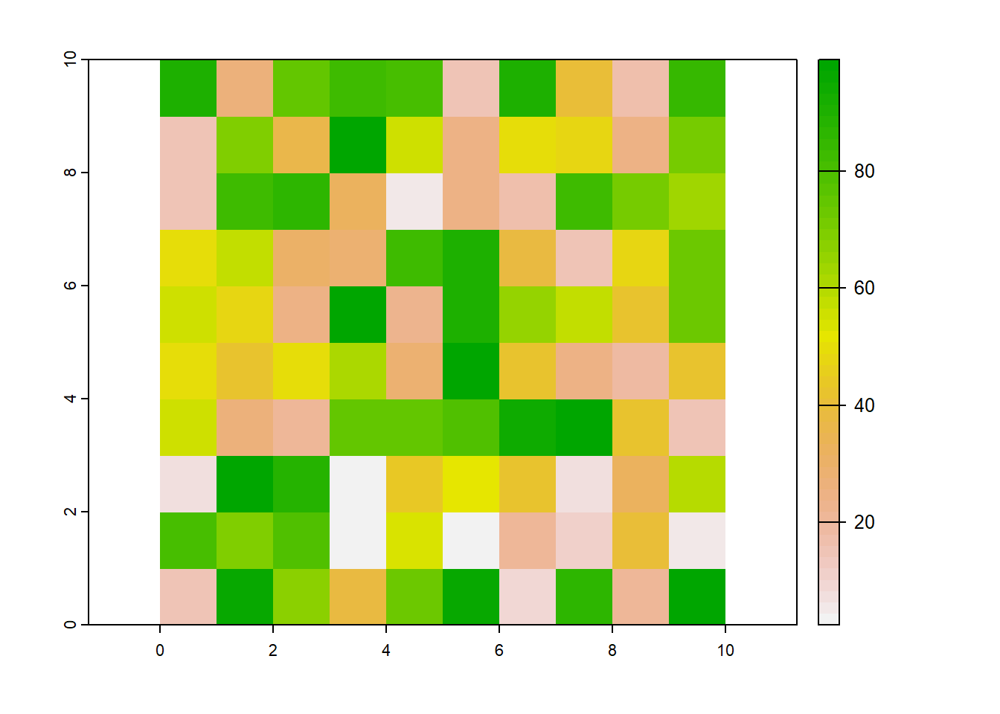
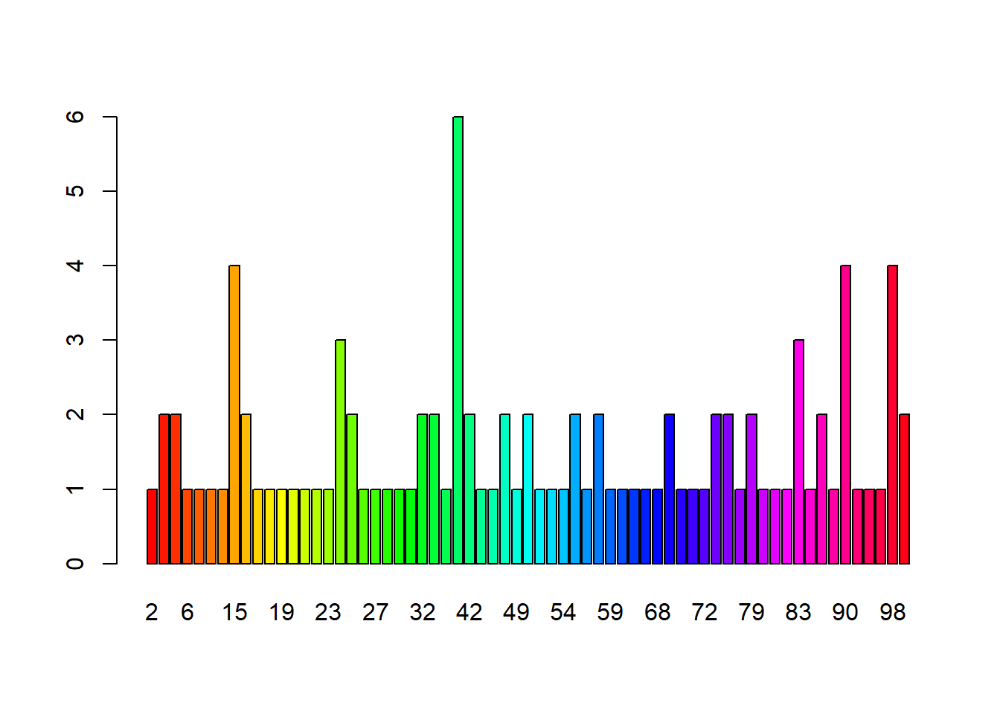
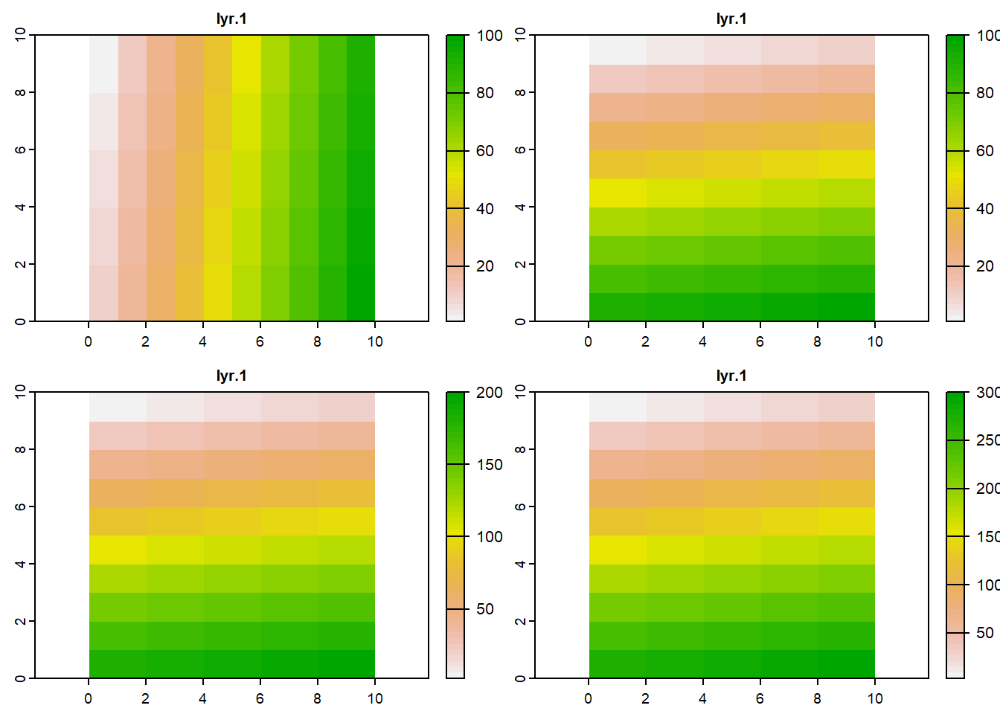

Actualmente hay muchos y distintos tipos de software para el tratamiento de información espacial, los cuales forman parte de los llamados “Sistemas de Información Geográfica”(GIS, en inglés). En los últimos años se ha ido migrando de la utilización de dichos programas a entornos de programación abiertos, como R, Phyton, Java, etc. En este breve instructivo utilizaremos el software R dentro del entorno de RStudio.
Creando un raster
Como siempre y antes de comenzar con una nueva serie de comandos, vamos a borrar los elementos guardados en la memoria de R y limpiar el environment. Además, vamos a setear nuestro directorio de trabajo.
rm(list=ls())
setwd("E:/User/transiciones_y_mapas")
## !! Recuerde que a R no le gustan los espacios en los nombres de archivo, así que evítelo siempre que sea posible.
Hay varios paquetes en R para trabajar con datos espaciales. Uno de los últimos y más completos es terra (gracias Terra por tu sacrificio). Así que vamos a instalarlo y cargarlo.
install.packages("terra")
library(terra)
Como dijimos anteriormente, un raster no es ni más ni menos que una matriz o grilla. El tamaño de la matriz está dado por el número de filas m y de columnas n. Cada intersección entre una fila y una columna representa el valor imn. Dicho valor puede ser numérico o categórico. Hagamos una matriz de 10 filas por 10 columnas, de forma tradicional:
## Creo un vector de valores de 1 a 100
matriz <- c(1:100)
## Asignamos las dimensiones de la matriz, en este caso de 10 x 10
dim(matriz) <- c(10,10)
## llamamos matriz
matriz
## [,1] [,2] [,3] [,4] [,5] [,6] [,7] [,8] [,9] [,10]
## [1,] 1 11 21 31 41 51 61 71 81 91
## [2,] 2 12 22 32 42 52 62 72 82 92
## [3,] 3 13 23 33 43 53 63 73 83 93
## [4,] 4 14 24 34 44 54 64 74 84 94
## [5,] 5 15 25 35 45 55 65 75 85 95
## [6,] 6 16 26 36 46 56 66 76 86 96
## [7,] 7 17 27 37 47 57 67 77 87 97
## [8,] 8 18 28 38 48 58 68 78 88 98
## [9,] 9 19 29 39 49 59 69 79 89 99
## [10,] 10 20 30 40 50 60 70 80 90 100
El objeto matriz es nuestra matriz, donde cada una de las 100 casillas toma valores del 1 al 100. Transformemos a esta matriz en un objeto tipo raster y veamos qué pinta tiene:
## rast: convierte matrices a raster.
## También lee rasters y hace rasters automaticamente.
raster1 <- rast(matriz)
## graficando la matriz
plot(raster1)

Lo que nos muestra este gráfico es nuestra matriz de 10 x 10, donde cada unas de las intersecciones toma un valor, señalizado en la escala de colores de la derecha (0: blanco, 100: verde). El objeto raster1 ha dejado de ser una matriz, para transformarse en un objeto raster.
Otra forma de hacer un raster es utilizando directamente la función rast(). Veamos cómo:
## Es necesario expresar explicitamente los límites del raster (x,y min/max)
## para que sea igual a la matriz que hicimos antes.
raster2 <- rast(ncol = 10, # número de columnas n
nrow = 10, # número de filas m
xmin = 0, # coordenada x inicial
xmax = 10, # coordenada x final
ymin = 0, # coordenada y inicial
ymax = 10) # coordenada y final
El objeto raster2 es creado directamente como un objeto raster. Sin embargo, no tiene valores, es simplemente un esqueleto.
raster2
## class : SpatRaster
## dimensions : 10, 10, 1 (nrow, ncol, nlyr)
## resolution : 1, 1 (x, y)
## extent : 0, 10, 0, 10 (xmin, xmax, ymin, ymax)
## coord. ref. : lon/lat WGS 84
Vamos a asignarle valores:
## El número de celdas.
ncell(raster2)
## [1] 100
## Le decimos que adopte los valores desde 1 hasta el número de celdas de raster2
values(raster2) <- 1:ncell(raster2)
## graficamos
plot(raster2)

El raster raster2 es igual al raster1, solo cambia la forma en que se le asignaron los valores a cada una de las casillas. Hasta el momento tenemos dos objetos raster, pero ninguno de ellos tiene un valor espacial. Para otorgarle espacialidad, tenemos que ubicarlos en algún lugar de la Tierra. Para ello, los vamos a proyectar utilizando un Sistema de Coordenadas Referencia (CRS, en inglés) determinado.
Hay al menos dos formas de asignarle un CRS a un objeto: podemos asignarle cada uno de los elementos del CRS a mano en lo que se conoce como cadena “proj4” o asignarle un código EPSG (EPSG: European Petroleum Search Group), que ya contiene todos los elementos codificados.
Cabe mencionar que la cadena “proj4” está en desuso, y que la mayoría de los paquetes para el manejo de datos espaciales en R utilizan de una u otra forma los códigos EPSG. ¿Por qué sucede esto? Veamos.
Vamos a proyectar nuestro raster usando la proyección POSGAR 2007 faja 5, utilizada para proyectar imágenes en ciertas partes de Argentina:
crs(raster1) <- " +proj=tmerc +lat_0=-90 +lon_0=-60 +k=1 +x_0=5500000 +y_0=0 +ellps=WGS84 +towgs84=0,0,0,0,0,0,0 +units=m +no_defs"
#+proj: tipo de proyección, en este caso Trasversal Mercator.
#+lat_0: valor de latitud 0 u origen.
#+lon_0: valor de longitud 0 u origen.
#+k:factor de escalado del meridiano central
#+x_0: valor del falso este
#+y_0: valor del falso norte
#+ellps: elipsoide de referencia (¿qué forma de la tierra se encaja con tu proyección?)
#+towgs84: otros factores de escalado
#+units: unidad de medida
#+no_defs: sin otros seteos por default.
raster1
## class : SpatRaster
## dimensions : 10, 10, 1 (nrow, ncol, nlyr)
## resolution : 1, 1 (x, y)
## extent : 0, 10, 0, 10 (xmin, xmax, ymin, ymax)
## coord. ref. : +proj=tmerc +lat_0=-90 +lon_0=-60 +k=1 +x_0=5500000 +y_0=0 +ellps=WGS84 +towgs84=0,0,0,0,0,0,0 +units=m +no_defs
## source : memory
## name : lyr.1
## min value : 1
## max value : 100
En “coord. ref.” podemos ver los parámetros del CRS que le asignamos. Para poder proyectar una imagen y/o entender los parámetros de la cadena proj4 casi que tenemos que hacer un curso de cartografía. Veamos cómo es el comando para asignarle una proyección a nuestro raster utilizando los códigos EPSG. El código EPSG de POSGAR 2007 faja 5 es 5347:
## asignación de la proyección
crs(raster2) <- "epsg:5347"
## la salida
raster2
## class : SpatRaster
## dimensions : 10, 10, 1 (nrow, ncol, nlyr)
## resolution : 1, 1 (x, y)
## extent : 0, 10, 0, 10 (xmin, xmax, ymin, ymax)
## coord. ref. : POSGAR 2007 / Argentina 5 (EPSG:5347)
## source : memory
## name : lyr.1
## min value : 1
## max value : 100
¡Me estas jodiennndoo! diría un famoso actor argentino. Con un simple código, establecimos el CRS. Al final, la industria petrolera no era taaan mala… (es broma, lo es). Supongamos que queremos proyectar un elemento espacial, en este caso un raster, con los valores de un CRS de otro elemento espacial. Podemos extraer los valores de un CRS y asignarselos a otro:
## asignando la proyección del raster 2 en el 1
crs(raster1) <- crs(raster2)
## nueva proyección
raster1
## class : SpatRaster
## dimensions : 10, 10, 1 (nrow, ncol, nlyr)
## resolution : 1, 1 (x, y)
## extent : 0, 10, 0, 10 (xmin, xmax, ymin, ymax)
## coord. ref. : POSGAR 2007 / Argentina 5 (EPSG:5347)
## source : memory
## name : lyr.1
## min value : 1
## max value : 100
¡Genial! Ahora sí tenemos un objeto explícitamente espacial. ¿Dónde está ubicado? Como nosotros le asignamos una extensión (x min/max,y min/max), toma esos valores como coordenadas. La proyección que nosotros utilizamos tiene un meridiano central que asume el valor 5500000 = x. Es decir, nuestro raster1 inicia a 5500000m a la izquierda de este meridiano central y termina a 5499900m del mismo. En cuanto a la posición Y, nuestro CRS toma el valor 0 en el polo sur, al igual que nuestro raster (ymin:0). Por lo tanto, el raster estaría en algún lugar cercano al polo sur. Por el momento, no nos interesa una visualización en el contexto planetario, lo dejaremos para más adelante, solo vamos a decir que con un simple cambio en la extensión del mapa, podríamos reubicarlo.
Operaciones con rasters
Ya vimos como crear un raster. También dijimos que un raster, en esencia, es una matriz con valores. Este concepto nos permite aplicarle álgebra matricial a nuestro objeto espacial. Veamos algunos ejemplos de operaciones básicas:
- Hacer raster2x2 nos arroja un nuevo raster raster3, cuyos valores son el doble del raster2. Podemos verlo en la escala de la izquierda:
## multiplico los valores de la matriz 'raster2' por 2
raster3 <- raster2 * 2
## el resultado
plot(raster3)

- También es posible sumar los rásteres:
## sumamos el 2 con el 3 y creamos el 4
raster4 <- raster2 + raster3
## mira cómo cambia la escalda de valores!
plot(raster4)

Ahora el valor máximo del raster raster4 es 300, que es la suma del máximo entre 2 y 3. Esto nos muestra que la suma se hace al igual que la suma de matrices, posición a posición. Como la suma y la multiplicación son operaciones admitidas, también lo serán la resta y la división.
Otras funciones que resultan útiles a la hora de trabajar con objetos espaciales son las siguientes:
class(raster): Nos dice con qué tipo de objeto espacial estamos lidiando.
class(raster2)
## [1] "SpatRaster"
## attr(,"package")
## [1] "terra"
cellSize(raster): Nos muestra el tamaño de la celda, en las unidades de la proyección que nosotros le dimos (m2).
cellSize(raster2)
## class : SpatRaster
## dimensions : 10, 10, 1 (nrow, ncol, nlyr)
## resolution : 1, 1 (x, y)
## extent : 0, 10, 0, 10 (xmin, xmax, ymin, ymax)
## coord. ref. : POSGAR 2007 / Argentina 5 (EPSG:5347)
## source : memory
## name : area
## min value : 0.5158278
## max value : 0.5158328
barplot(raster): Nos arroja un gráfico de barras con la frecuencia de los valores presentes en el raster. Especialmente útil para contabilizar y caracterizar ambientes según tipos de cobertura. En este caso, como los valores no se repiten, siempre tienen la frencuencia uno. Hagamos un raster con valores aleatorios y veamos que nos muestra la función barplot.
## Frecuencia de los valores ráster: todos tienen la misma frecuencia
barplot(raster1)

## Para crear un ráster aleatorio, comenzando con la función de 'rast()':
raster_aleatorio <- rast(ncol = 10, nrow = 10,
xmin = 0, xmax = 10, ymin = 0, ymax = 10)
## En la secuencia, asignamos valores al azar entre 1 y 100 con la funcion runif()
## (para más info a respecto de runif, ejecutar '?runif'):
values(raster_aleatorio) <- runif(100, min = 1, max = 100)
## Asignamos la misma proyección que el raster2
crs(raster_aleatorio) <- crs(raster2)
## Graficamos el raster ...
plot(raster_aleatorio)

# ... y el gráfico de barras
barplot(raster_aleatorio)

## !! Ahora vemos que, por azar, hay varios valores repetidos en el raster.
crds(raster, df = TRUE, na.rm = TRUE): Otra función interesante es la de capturar los valores de las coordenadas X e Y de nuestro raster (o de cualquier raster/objeto espacial) y guardarlas en un objeto de tipo “data frame” (tabla de datos):
coordenadas <- crds(raster2,
df = TRUE, # parámetro para guardar valores en 'data frame'
# si es FALSE, guarda en formato de matriz.
na.rm = TRUE) # Si TRUE, excluyen las celdas VERDADERAS que son NA
## resultado
head(coordenadas)
## x y
## 1 0.5 9.5
## 2 1.5 9.5
## 3 2.5 9.5
## 4 3.5 9.5
## 5 4.5 9.5
## 6 5.5 9.5
c(raster1, raster2, …, rastern): Otra función muy útil es la que nos permite hacer una “pila” (stack, en inglés) de rasters. Cada raster será un capa (layer, en inglés). Esta función es especialmente útil cuando tenemos imágenes provenientes de distintas fuentes, como por ejemplo de sensores multiespectrales. Se puede asignar una imagen a un determinado color y crear imágenes compuestas. Pero eso también lo veremos más adelante.
## primero hago un "vector" de rasters con la función de concatenación 'c()'
pila <- c(raster1, raster2, raster3, raster4)
## resultado
pila
## class : SpatRaster
## dimensions : 10, 10, 4 (nrow, ncol, nlyr)
## resolution : 1, 1 (x, y)
## extent : 0, 10, 0, 10 (xmin, xmax, ymin, ymax)
## coord. ref. : POSGAR 2007 / Argentina 5 (EPSG:5347)
## sources : memory
## memory
## memory
## ... and 1 more source(s)
## names : lyr.1, lyr.1, lyr.1, lyr.1
## min values : 1, 1, 2, 3
## max values : 100, 100, 200, 300
Nuestro stack pila sigue siendo un raster espacial (mira la classe!):
class(pila)
## [1] "SpatRaster"
## attr(,"package")
## [1] "terra"
Si llamamos a la función “plot()” con el nombre de nuestro objeto pila, se trazan todos los rásteres que componen nuestra pila:
plot(pila)

Si necesitamos trabajar con una de las capas de la pila, podemos extraerla de manera individual:
## guarda el raster número 4 en un objeto llamado "pila_4"
pila_4 <- pila[[4]]
## el resultado
pila_4
## class : SpatRaster
## dimensions : 10, 10, 1 (nrow, ncol, nlyr)
## resolution : 1, 1 (x, y)
## extent : 0, 10, 0, 10 (xmin, xmax, ymin, ymax)
## coord. ref. : POSGAR 2007 / Argentina 5 (EPSG:5347)
## source : memory
## name : lyr.1
## min value : 3
## max value : 300
Nota: Si no sabe cómo manejar objetos en R, tenemos una clase aquí en el blog (haga clic aquí).
writeRaster(raster, 'nombre_raster.tif'): Por último, una vez que hayamos terminado de trabajar con nuestros raster, podemos guardarlos como imágenes y dejarlas disponibles para un futuro trabajo en algún SIG (o “Sistema de Información Geográfica”):
writeRaster(pila,"raster_pila.tif")